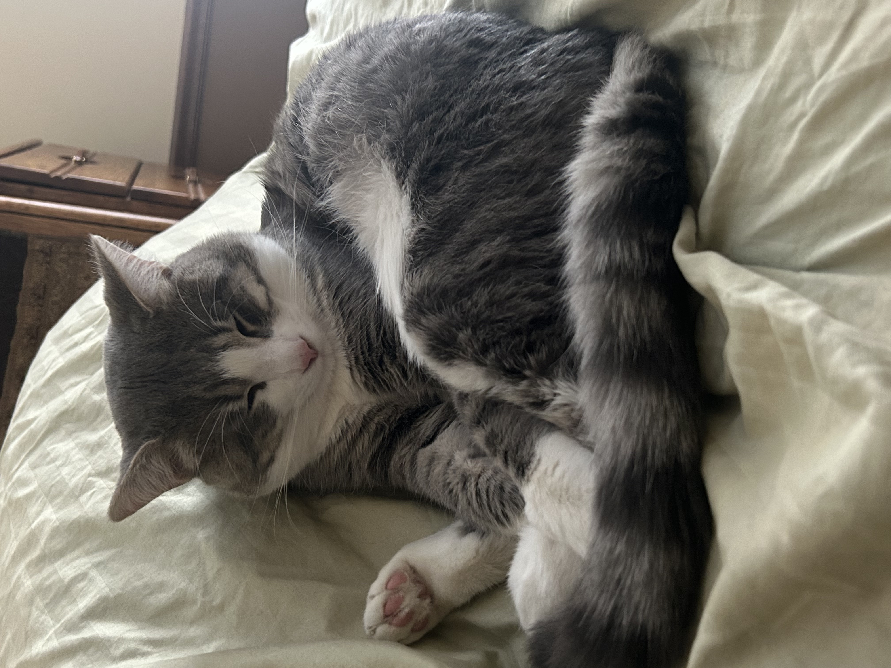
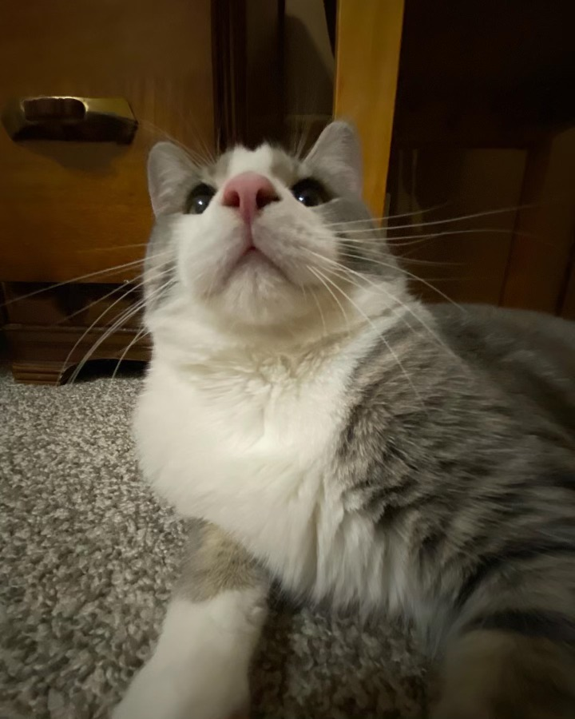
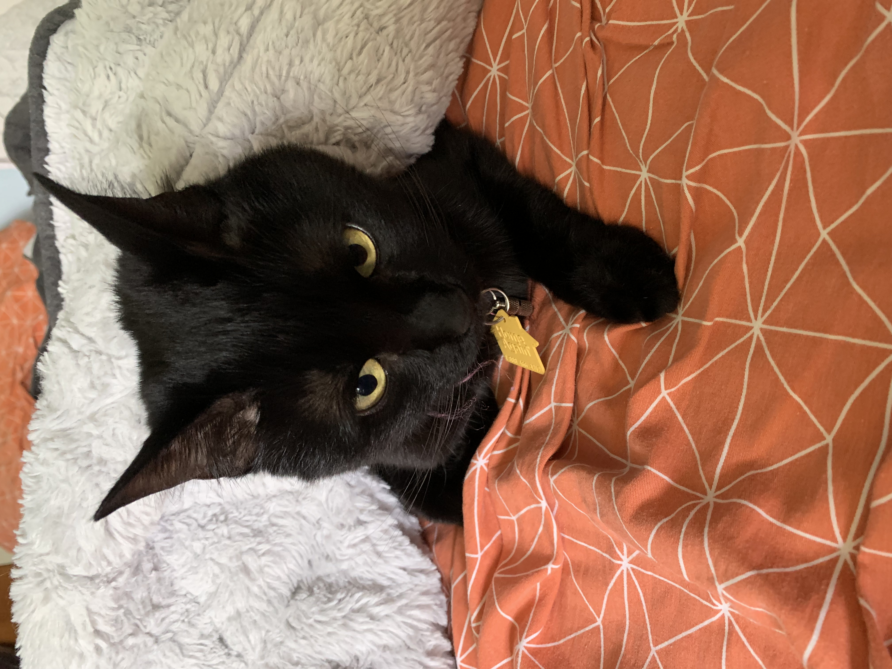
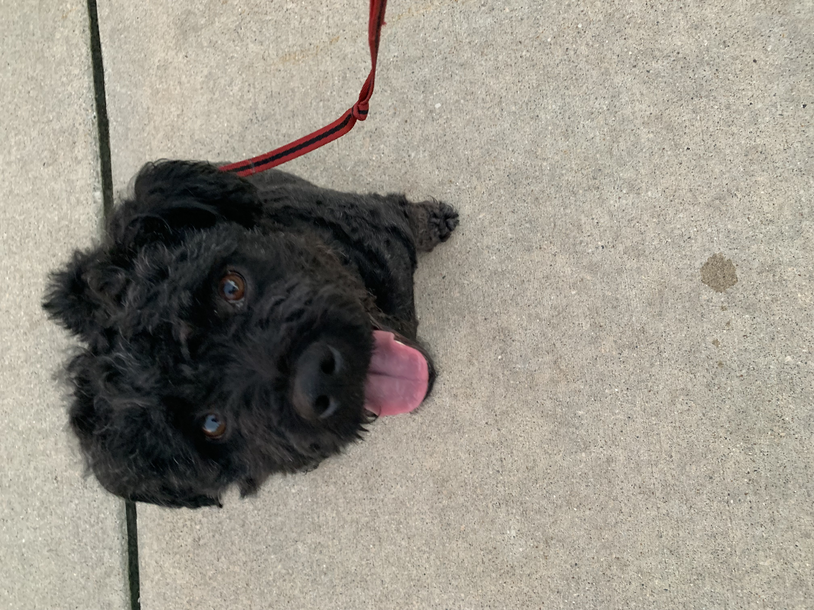
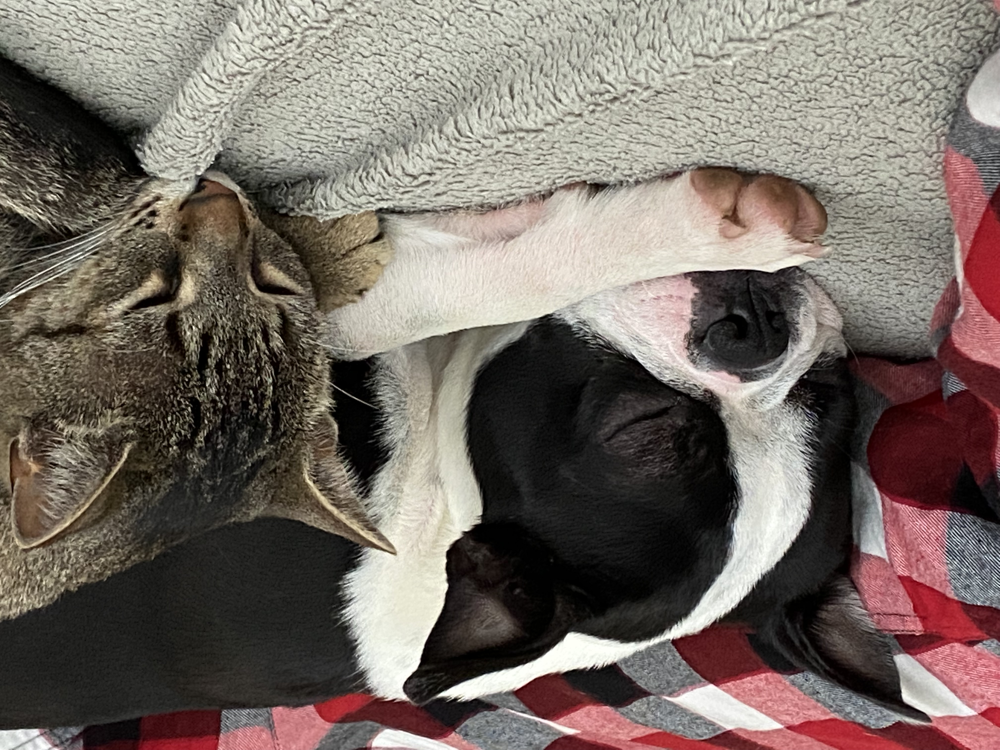

Lovley Bacon Q Dog

Bacon Q. Dog is a 9 year old labradoodle. He prefers to spend his days lounging among the three different beds/couches that his family has gifted him. He enjoys a walk or two around the neighborhood, as long as he can pretend that he doesn't see any of the other animals to avoid the embarrassment of not wanting to admit he has no wolf-like skills in chasing them.
At night just as the rest of the family is ready to relax, Bacon suddenly wants to release all of his energy. He will place his toys on a mini couch and frantically drag the couch around, giving his toys "a ride." There is also a lot of rolling. Lots and lots of rolling.
Photo Gallery


Likes
- Playing bones
- Playing with its own tail
- Barking at children
Hua Hua

Huahua is a three-year-old kitten with gray and black hair. She is a very fond cat, often come to my desk to play with me when I do my homework, and often like to rub my side when I watch TV or play mobile phone. At the same time, she is also very warm, every time when guests come to our home to play, she will get along well with the guests.
Unlike other cats who is very afraid of getting out of the house, Hua Hua is very interested in exploring the outside world. Evry time when my parents are preparing for a walking at the door, she will come and continue spinning, express her wish to go out with my parents.
Photo Gallery

Likes
Earl

Earl is a gray cat who loves playing hide and seek! He is very friendly but does not enjoy being picked up!
You can find Earl hiding behind a corner, or trying to knock things off the mantle.
Photo Gallery
 Likes
- Hide and Seek
- Knocking things off the mantle
- Being pet
Astrid
Astrid is a black cat who enjoys hiding and playing with others.
Astrid enjoys playing and lives a peaceful life.
Photo Gallery

Likes
- June (Her owner)
- Food
- Hiding
Maui
Maui is a energetic black dog that frequently steals shoes to prevent people from leaving. He loves jumping on people and doesn't care for excercise all that much.
He loves his family and will lick your face.
Photo Gallery


Likes
- Belly rubs
- Stealing shoes
- Attacking friends with licks
Moira

Moira is a energetic dog that greets everyone as soon as they come home!
She enjoys playing with her feline sister and running around in the background
Photo Gallery

Likes
- Bike rides
- Dutch-ovening any member of the family
- Playing with her feline sister
Milo

Milo is a high maintenance, lazy dog who prefers lounging over running. His favorite food to eat is Indian food, and he loves anything with chicken in it.
He especially loves chicken, but it must be marinated and seasoned.
Photo Gallery


Likes
- Chicken (from biryani)
- Sleeping
- Eating